긴급 업무를, 먼저 답한 사람이 아니라
실제로 집중할 시간이 있는 사람에게
소규모 IT 팀의 리드(대표)가 급한 일이 들어온 순간, 후보마다 남은 실제 업무 시간과 최근 긴급 업무 부담을 비교하고
근거를 보며 직접 배정하는 도우미입니다. 순위는 규칙이 계산하고, AI는 초안과 설명만 맡고, 결정은 사람이 합니다.
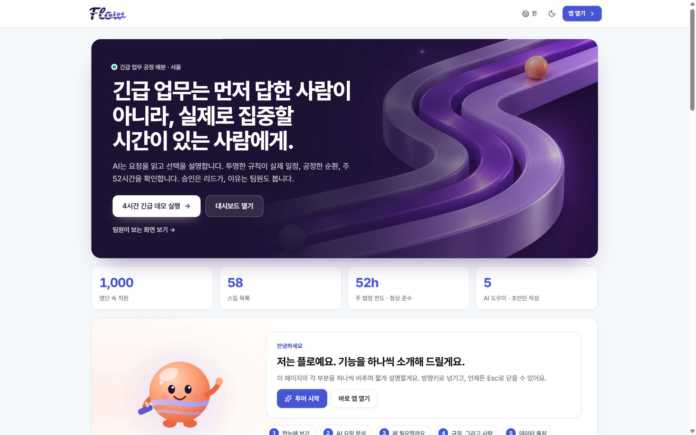
심사 의견이 제안한 데모 예시(“기존 담당자는 1시간, 추천 동료는 5시간”)를 그대로 시연 시나리오로 구현했습니다.
1차 심사의 기획 · 디자인 · 개발 의견을 항목별로 정리하고, 이 문서에서 답하는 위치를 표시했습니다.
| 심사 의견 | Flow의 반영 | 위치 |
|---|---|---|
| 1. 기획 | ||
| 1.1 주제(소상공인 경영 문제)와의 연결, 관련 없는 근거 통계 | 대상을 “리드가 곧 대표인 소규모 IT 사업장”으로 정의하고 소상공인 · 소기업 기준으로 설명했습니다. 자살 사망 통계는 삭제하고, 소규모 사업장의 장시간 근로 · 법적 보호 공백 근거로 교체했습니다. | 01 |
| 1.2 데이터는 어디서 오는가 | 캘린더 · 이슈 트래커 · 온콜 도구에서 가져오는 연동 설계와, 현재 구현된 CSV 가져오기 · 연동 API 명세 · 팀원 직접 정정의 세 경로를 정리했습니다. | 07 |
| 1.3 기존 도구와의 차별점 | “긴급 업무가 도착한 순간, 실제 남은 시간과 최근 부담으로 후보를 즉시 비교”를 핵심 차별점으로 명시하고 비교표를 넣었습니다. | 02 |
| 1.4 AI의 역할 · 예상 시간 정확도 · 아키텍처 | AI는 추출 · 설명만 하고 순위는 규칙이 계산합니다. AI 예상 시간을 유사 완료 업무의 실제 소요 시간과 비교해 보정합니다. 구성도와 서버 구성을 추가했습니다. | 08 09 |
| 1.5 팀원 수용성과 개인정보 | 열람 · 직접 정정 · 인사 평가 미사용의 세 원칙을 화면과 문구로 보장합니다. | 05 |
| 프로젝트 이름 불일치 | 제출 양식, 소개서, 발표 자료, 앱 화면 모두 Flow로 통일했습니다. | 전체 |
| 2. 디자인 | ||
| 후보마다 경험 · 실제 가용 시간 · 배정 영향을 같은 순서로 | 모든 후보 카드가 ① 경험 ② 마감 전 실제 가용 시간 ③ 배정 시 영향의 고정 순서를 따릅니다. 점수는 카드 밖 설명으로 내렸습니다. | 04-② |
| 숫자가 아닌 일정 위 가용 시간, 연속 시간과 조각 시간 구분 | 후보마다 하루 타임라인을 그리고, 2시간 이상 집중 블록 · 회의 사이 짧은 빈 시간 · 회의 · 리뷰 · 온콜을 색으로 구분합니다. “총 여유”와 “최장 연속”을 나란히 표시합니다. | 04-② |
| 후보 선택 시 일정 미리보기, 승인 직전 변경 요약 | 선택하면 새 업무 블록이 타임라인에 미리 표시됩니다. 승인 화면은 예약 시간대와 영향받는 기존 마감을 요약합니다. | 04-③ |
| 아무도 여유가 없을 때 분할 · 마감 조정 제안 | “무리 없이 맡을 사람이 없습니다” 화면에서 작업 분할, 마감 조정, 인계 가능한 단계로 나누기를 즉시 재계산해 제안합니다. | 04-⑤ |
| 추천 옆에서 팀원이 직접 정정 · 재평가 | 후보 카드마다 “누락 업무 신고 · 시간 정정”이 있고, 정정하면 비교가 다시 계산됩니다. | 05 |
| 대시보드: 순위 대신 반복 배정 · 일정 중복 | 공정성 지수, 긴급 업무 부담(팀 평균선), 조각난 일정, 오늘의 일정 충돌 지점을 보여줍니다. | 06 |
| 3. 개발 | ||
| 3.1 핵심 흐름 우선 완성, 로딩 표시, 실패 안내 | 요청 → 후보 비교 → 리드 승인을 끝까지 완성했습니다. AI 작업 중 로딩 상태, 실패 시 규칙 기반 초안과 재시도 버튼을 제공합니다. | 04-① |
| 3.2 기술 스택, LLM, 호출 방식과 요청 · 응답 형식 | React 19 + Hono API, Groq openai/gpt-oss-120b (JSON 모드, temperature 0), 요청 · 응답 예시를 명시했습니다. 가용 시간 계산은 코드 규칙입니다. | 08 09 |
| 3.3 합성 데이터, 기본 DB 스키마 | 제공된 직원 CSV 1,000명 + 합성 일정으로 시연합니다. 직원 · 업무 · 일정 블록 · 배정 이력 테이블을 Supabase(Postgres)에 구현했습니다. | 09 |
| 3.4 배포 URL, API 키 테스트, AI 실패 시 동작 | Vercel 배포 URL, Swagger 문서, 서버 전용 키 보관을 정리했습니다. 이 문서의 화면은 AI API가 연결되지 않은 상태에서 캡처했으며, 비교 화면이 합성 데이터로 그대로 동작함을 보여줍니다. | 11 |
급한 일은 늘 먼저 응답한 사람이나 이전 담당자에게 몰립니다. 그 사람이 한 시간밖에 여유가 없어도요. 인사팀도 PM도 없는 작은 회사에서는 이 판단을 대표가 기억에 의존해 혼자 내립니다.
| 구분 | 기준 | Flow와의 관계 |
|---|---|---|
| 소상공인 | 소상공인기본법 · 시행령: 상시근로자 10명 미만(광업 · 제조업 · 건설업 · 운수업) 또는 5명 미만(그 밖의 업종, 정보통신업 포함)인 소기업 | 대표 1명이 개발 · 영업 · 고객 대응을 겸하며 3~4명에게 일을 나눕니다. Flow는 인원이 적은 팀에서도 같은 방식으로 동작합니다. |
| 소기업 | 중소기업기본법상 업종별 매출액 기준 이하의 기업. 정보통신업 소규모 개발사 · 에이전시 대부분이 여기에 속합니다 | 10~30명 규모의 외주 개발사 · SaaS 스타트업. 대표나 팀장 1명이 여러 프로젝트의 긴급 요청을 배정합니다. |
두 경우 모두 업무 배분 전담자가 없고, 대표의 경영 시간이 “누구에게 맡길지”에 쓰입니다. 잘못된 배정은 마감 지연(고객 이탈)과 핵심 인력의 과로 · 이직(채용 비용)으로 곧바로 경영 문제가 됩니다. Flow는 이 판단을 몇 초로 줄이고 근거를 남깁니다.
통계 출처는 마지막 쪽 참고 자료에 있습니다. 소규모 IT 팀 리드 인터뷰는 아직 진행하지 않았으며, 본선 전 3개 팀 이상 인터뷰로 보강할 계획입니다. 근거가 없는 수치는 싣지 않았습니다.
Flow는 “지금 누가 바쁜가”를 보여주는 도구가 아니라, “이 긴급 업무를 마감 전에 무리 없이 끝낼 수 있는 사람은 누구인가”에 답하는 도구입니다.
| 질문 | 일반 프로젝트 관리 도구의 업무량 보기 | Flow |
|---|---|---|
| 언제 쓰나 | 주간 계획 · 회고 때 전체 현황 확인 | 긴급 요청이 도착한 그 순간, 요청 문장을 붙여넣으면 바로 |
| 무엇을 세나 | 할당된 이슈 수 · 스토리 포인트 | 회의 · 코드 리뷰 · 온콜 · 기존 마감 · 휴식을 뺀 마감 전 실제 가용 분과 최장 연속 시간 |
| 후보 비교 | 사람별 막대를 리드가 눈으로 비교 | 스킬 기준을 통과한 후보만, 같은 순서(경험 → 가용 시간 → 영향)로 나란히 비교, 탈락 사유 공개 |
| 공정성 | 보통 고려하지 않음 | 최근 30일 긴급 업무 수를 점수에 반영, 점수가 비슷하면 덜 맡은 사람 우선 |
| 배정 결과 | 담당자 필드 변경 | 새 업무가 들어갈 캘린더 위치 미리보기, 영향받는 기존 마감 요약, 승인 후 작업 블록 예약과 이력 |
| 노동 시간 한도 | 보통 고려하지 않음 | 주 40h · 52h 기준선을 후보마다 표시, 정규 근무 시간 밖으로 예약하지 않음 |
팀 리드, Flow(AI · 스케줄러), 팀원 세 주체가 여섯 단계로 움직입니다. 결정 단계는 반드시 사람이 수행하고, 팀원의 검토 요청은 다시 리드에게 돌아갑니다.
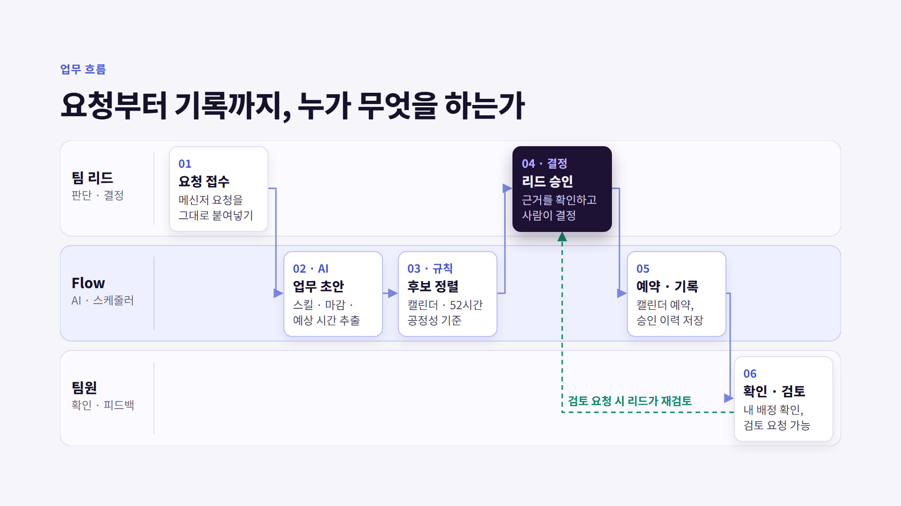
심사 의견 3.1에 따라 하나의 핵심 흐름을 끝까지 완성했습니다. 아래 화면은 모두 실제 앱에서 이 순서대로 캡처했습니다.
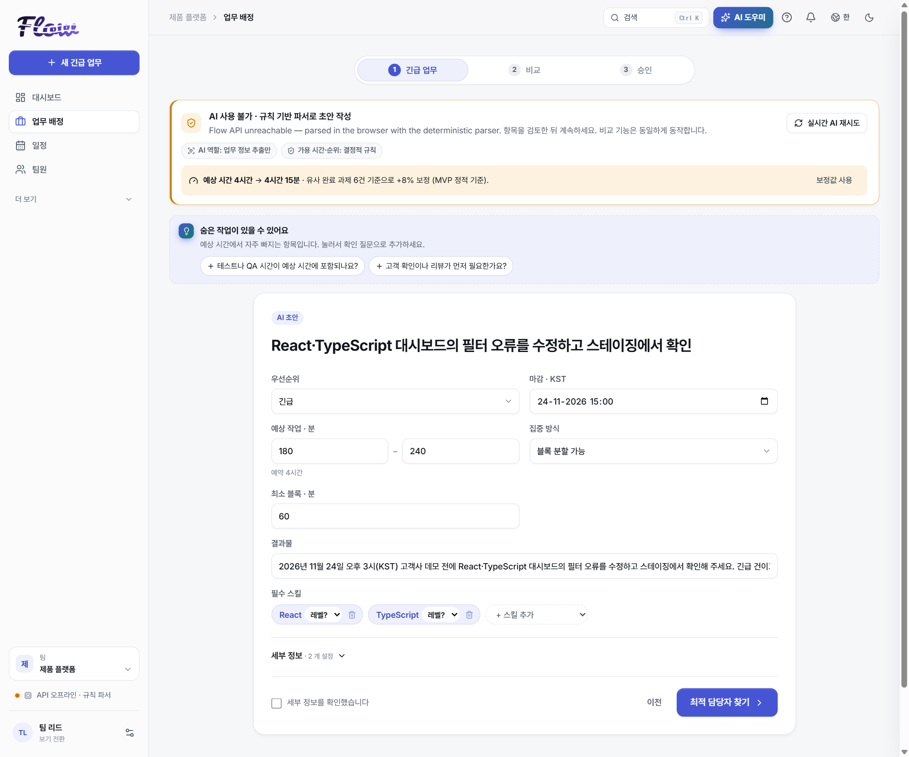
AI가 응답하는 동안에는 “AI가 과제를 정리하는 중…” 로딩 상태와 “취소하고 직접 입력” 버튼을 보여줍니다. 실패를 시연하는 스위치도 있습니다.
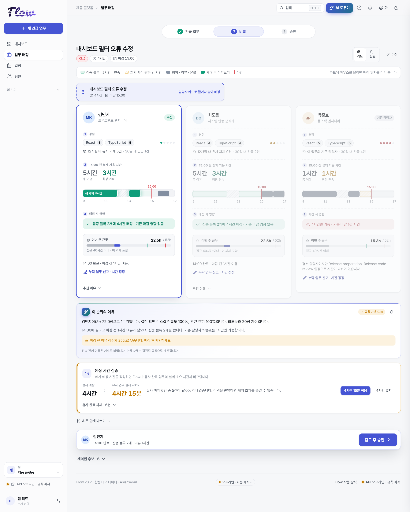
스킬 기준을 통과하지 못했거나 권한이 확인되지 않은 6명은 “제외된 후보”에 사유와 함께 접혀 있습니다.
후보를 선택하면 새 업무 블록이 그 사람의 일정에 초록색으로 미리 그려집니다(그림 3의 김민지 카드). “검토 후 승인”을 누르면 승인 직전 요약이 나옵니다.
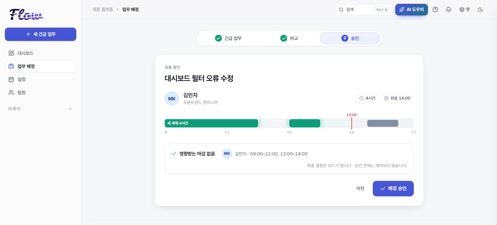
승인하면 작업 블록이 팀 캘린더에 예약되고 승인 이력이 남습니다. 저장 직전에 최신 캘린더로 다시 확인하고, 두 번 눌러도 중복 예약되지 않습니다.
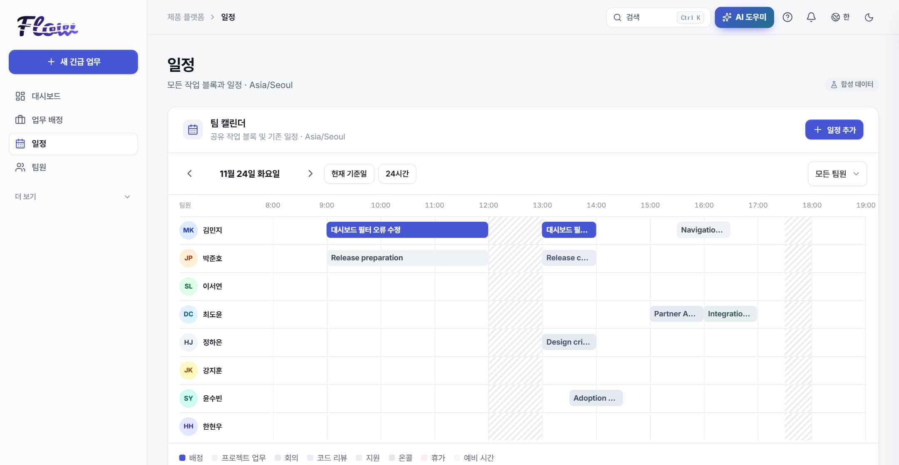
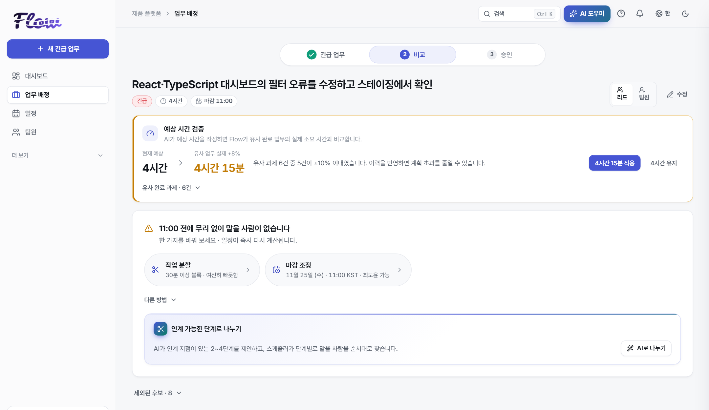
“다른 방법”에는 범위 축소, 권한 확인, 기존 작업 이동 시뮬레이션이 있습니다. 모든 대안도 리드가 적용해야 반영됩니다.
| 원칙 | Flow의 구현 |
|---|---|
| ① 열람 | “내 데이터” 표에 Flow가 가진 본인 정보 전체를 항목 · 값 · 사용 목적 · 출처와 함께 공개하고, JSON으로 내려받을 수 있습니다. |
| ② 직접 정정 | 스킬 레벨과 근무 시간을 본인이 고칩니다. 후보 카드의 “누락 업무 신고 · 시간 정정”과 팀원 화면의 “내 일정 말로 알려주기”로 빠진 업무를 추가하면 비교가 다시 계산됩니다. 배정 이유를 보고 검토를 요청할 수도 있습니다. |
| ③ 평가 미사용 | 화면에 “이 정보는 한 가지 목적으로만 사용됩니다”를 명시합니다. 업무량 · 가용 시간 데이터는 업무 분배에만 쓰고 인사 평가, 순위, 활동 감시에 쓰지 않습니다. 키 입력 · 화면 시간 · 위치는 수집하지 않습니다. |
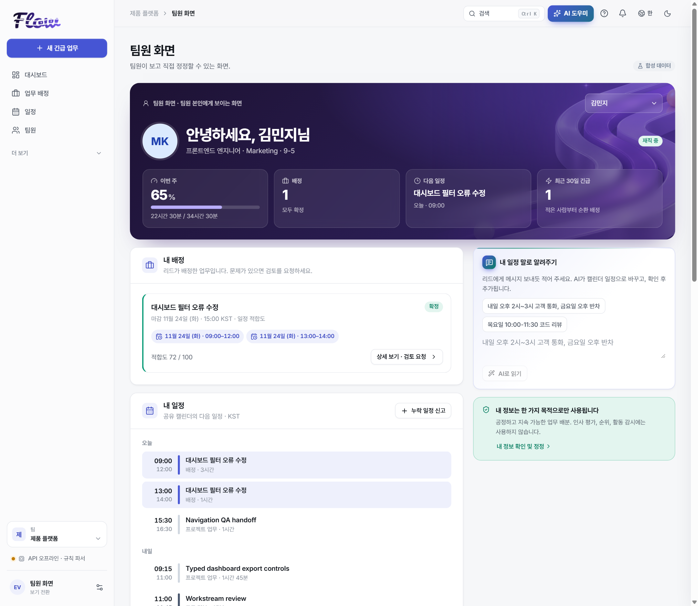
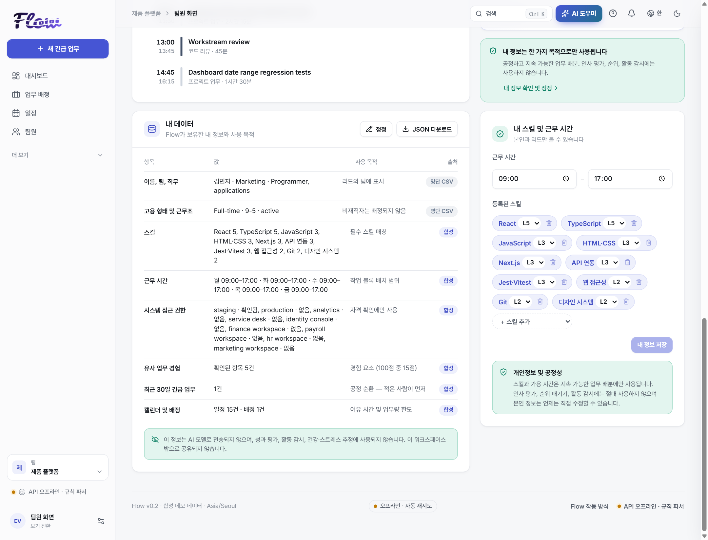
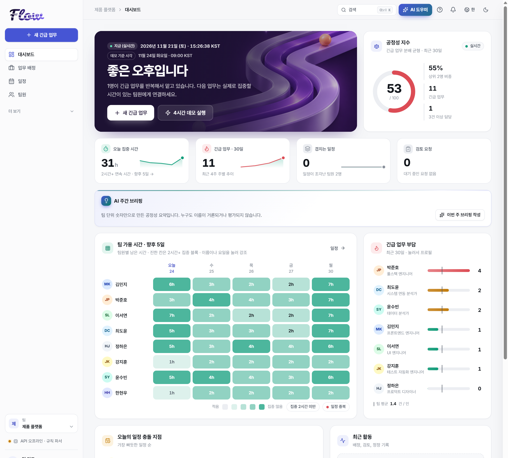
AI 주간 브리핑은 팀 단위 숫자만으로 작성하며 누구의 이름도 거론하거나 평가하지 않습니다.
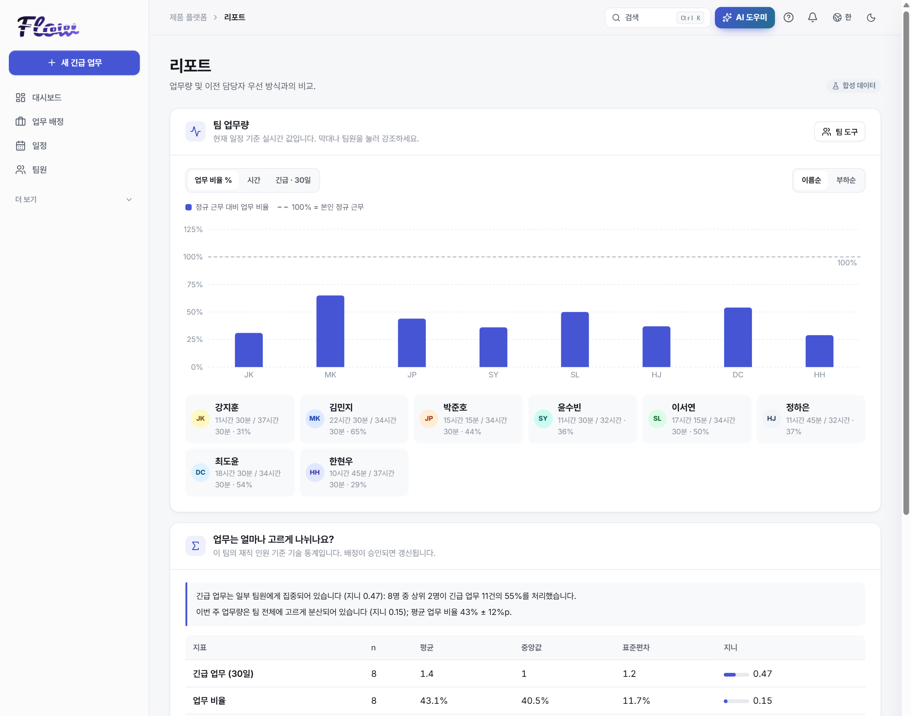
원칙: 팀원이 새로 입력하는 것은 없다. 이미 쓰는 도구에서 읽어 오고, 사람은 틀린 것만 고칩니다.
| 데이터 | 가져올 곳 (도입 시) | 현재 구현 상태 |
|---|---|---|
| 회의 · 휴가 · 외근 | Google Calendar, Microsoft 365 / Outlook 일정 (읽기 전용, 시간과 종류만) | 합성 캘린더 블록 약 3,500개. 일정 CSV 가져오기 화면 구현 |
| 프로젝트 업무 · 마감 | Jira, Linear, GitHub Issues의 담당자 · 마감 · 예상 시간 | 합성 진행 업무. 연동 API 명세(POST /api/integrations/sync)를 정적 응답으로 문서화 |
| 코드 리뷰 | GitHub · GitLab 리뷰 요청 | 캘린더 블록의 리뷰 종류로 표현 |
| 온콜 · 지원 당번 | PagerDuty · Opsgenie 당번표 또는 공유 시트 | 캘린더 블록의 온콜 · 지원 종류로 표현 |
| 스킬 · 경험 | 완료 이슈의 기술 태그와 담당 이력에서 추정 + 본인 확인 | 제공된 직원 CSV 1,000행 + 직무별 합성 스킬 프로필(58개 스킬, 1~5 레벨). 스킬 CSV 가져오기 구현 |
| 실제 소요 시간 | 완료 이슈와 그 업무의 캘린더 블록 실제 사용 시간 | 합성 완료 업무 18건으로 예상 시간 보정(08) |
| 누락 · 오류 | 팀원 정정 | “누락 업무 신고 · 시간 정정”, “내 데이터” 정정, 메시지로 일정 추가 |
실현 순서: 6시간 개발 범위에서는 외부 연동 대신 합성 데이터와 CSV 가져오기로 시연합니다. 본선 이후 ① 캘린더 읽기 연동 → ② 이슈 트래커 연동 → ③ 완료 이슈 기반 시간 보정 순서로 확장합니다. 연동 데이터도 업무 분배에 필요한 시간 · 종류 · 스킬만 가져오고 본문 내용은 저장하지 않습니다.
| 작업 | 담당 | 설명 |
|---|---|---|
| 요청 → 업무 초안 | AI (실패 시 규칙 파서) | 우선순위, 마감(KST), 예상 시간 범위, 필수 스킬과 레벨, 분할 가능 여부, 모호한 점은 질문으로 |
| 예상 시간 보정 | 규칙 | 같은 스킬의 완료 업무에서 실제/예상 비율을 계산해 보정안 제시. 표본 3건 미만이면 보정하지 않음 |
| 가용 시간 · 집중 블록 | 규칙 | 정규 근무 시간 − 회의 · 리뷰 · 온콜 · 기존 업무 − 휴식 · 예비 시간. 최소 블록 길이, 마감 전 여유를 계산 |
| 후보 순위 | 규칙 | 스킬 25 · 경험 15 · 마감 전 여유 15 · 업무량 15 · 기존 마감 12 · 집중 10 · 과부하 이력 8 (합 100). 5점 이내면 최근 긴급 업무가 적은 사람 우선 |
| 순위 설명 · 단계 분할 · 브리핑 | AI | 이름을 [A] 같은 기호로 바꾼 요소 점수만 받아 쉬운 말로 설명 |
| 배정 결정 | 사람 | 리드가 승인해야만 예약 |
AI가 “4시간”을 제안하면 Flow는 React · TypeScript 스킬이 겹치는 완료 업무 6건을 찾아 예상과 실제를 비교합니다. 6건 중 5건이 ±10% 안이었고 평균 +8% 더 걸렸으므로 4시간 15분을 제안합니다. 리드는 “4시간 15분 적용” 또는 “4시간 유지”를 고릅니다.
도입 시 표본은 완료 이슈와 그 업무에 실제로 쓰인 캘린더 블록에서 자동으로 쌓이며, 업무가 끝날 때마다 보정이 정확해집니다. 현재는 합성 완료 업무 18건의 정적 기준입니다.
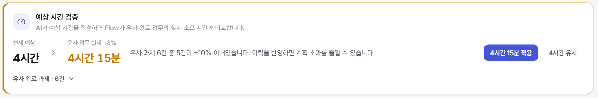
브라우저는 LLM을 직접 부르지 않습니다. Flow API 서버가 키를 보관하고 호출하며, JSON 모드 · temperature 0 · 8초 타임아웃을 씁니다. 실패하거나 키가 없으면 같은 형식의 규칙 기반 초안을 돌려줍니다.
POST /api/intake/extract
{ "text": "11월 24일 오후 3시 고객사 데모 전에 대시보드 필터 오류 수정… 3~4시간", "now": <데모 기준 시각(분)> }
200 OK
{ "ok": true, "mode": "live" | "fallback", "provider": "groq", "model": "openai/gpt-oss-120b",
"aiRole": "task_extraction_only", "schedulingEngine": "deterministic_rules", "latencyMs": 812,
"draft": { "title": "대시보드 필터 오류 수정", "urgency": "critical", "deadline": "2026-11-24T15:00:00+09:00",
"estimatedMinMinutes": 180, "estimatedMaxMinutes": 240,
"requiredSkills": [{ "id": "react", "minLevel": 4 }, { "id": "typescript", "minLevel": 4 }],
"requiresStagingAccess": true, "splittable": true, "minFocusMinutes": 60,
"questions": ["테스트나 QA 시간이 예상 시간에 포함되나요?"] },
"calibration": { "rawMaxMinutes": 240, "calibratedMinutes": 255, "ratio": 1.08, "samples": 6,
"source": "static-benchmark", "calibrationNote": "…" } }
응답 예시는 일부 필드(summary, deliverable 등)를 생략했습니다. 서버는 응답을 스키마(zod)로 검증하고, 맞지 않으면 규칙 기반 초안으로 대체합니다. 실제 필드와 스키마는 Swagger 문서(/api/docs)에 OpenAPI 3.1로 공개되어 있습니다. 모든 AI 호출은 모드 · 지연 시간 · 실패 사유 같은 메타데이터만 ai_events에 기록하고, 요청 본문은 저장하지 않습니다.
API 서버나 데이터베이스가 꺼져 있어도 웹 앱은 브라우저 저장소와 규칙 기반 파서로 전체 흐름을 계속 제공합니다.
심사 의견 3.3이 제안한 직원 · 업무 · 일정 블록 · 배정 이력 테이블을 Supabase 마이그레이션(supabase/migrations)으로 구현했습니다.
| 테이블 | 심사 의견의 대응 | 주요 열 |
|---|---|---|
employees | 직원 | id, name / name_ko, team, role, status, shift, skills(jsonb), work_hours(jsonb), access(jsonb) |
assignments | 업무 + 배정 | task_id, employee_id, title, priority, deadline_at, effort_min, score, reason, pending, approval_id |
calendar_blocks | 일정 블록 | employee_id, title, kind(work · meeting · review · support · on-call · leave …), start / end, task_id |
assignment_events | 배정 이력 | task_id, seq, type(approval · replacement · review …), note, at |
verifications | 팀원 정정 | employee_id, 본인이 정정한 스킬 · 근무 시간 · 권한 확인 |
workspaces | 팀 설정 | rev(낙관적 동시성), policy(근무 한도 · 예비 시간), 기준 시각 |
schedule_scans · ai_events | 점검 · 감사 | 일정 위험 점검 결과, AI 호출 메타데이터(본문 미저장) |
Flow는 한국 노동법, 개인정보 보호법, 인공지능 기본법을 처음부터 설계 조건으로 삼았습니다.
| 법 · 조항 | 요구 사항 | Flow의 설계 |
|---|---|---|
| 근로기준법 제50 · 53조 | 주 40시간 + 연장근로 1주 12시간 한도(주 52시간) | 정규 근무 시간 안에서만 예약하고, 모든 후보에 이번 주 근무 시간을 40h · 52h 기준선과 함께 표시합니다. 5인 미만 사업장에도 같은 한도를 기본값으로 적용합니다. |
| 근로기준법 제54조 | 휴게: 4시간에 30분, 8시간에 1시간 이상 | 휴식 · 예비 시간은 보호 블록이며 업무를 예약하지 않습니다. |
| 개인정보 보호법 제37조의2 | 완전히 자동화된 결정에 대한 거부 · 설명 요구권 | 완전 자동 결정이 없습니다. 모든 배정은 리드가 승인하고, 이유를 팀원에게 공개하며, 팀원은 검토를 요청할 수 있습니다. |
| 개인정보 보호법 제3 · 35 · 36조 | 최소 수집 · 목적 제한 · 열람 · 정정권 | 업무 분배에 필요한 일정 · 스킬만 사용하고, “내 데이터”에서 열람 · 정정 · 내려받기를 제공합니다. 나이 · 성별 · 건강 정보는 수집하지 않습니다. |
| 인공지능 기본법 (2026. 1. 22. 시행) | 고영향 AI의 사람 개입 · 설명 · 이용자 보호 | AI는 초안과 설명만, 순위는 결정적 규칙, 결정은 사람. AI가 만든 결과임을 표시하고 호출 메타데이터를 기록합니다. |
| 근로자참여법 제20조 | 근로자 감시 설비 설치는 노사협의 사항 | 활동 감시 기능이 없습니다. 키 입력 · 화면 시간 · 위치를 수집하지 않습니다. |
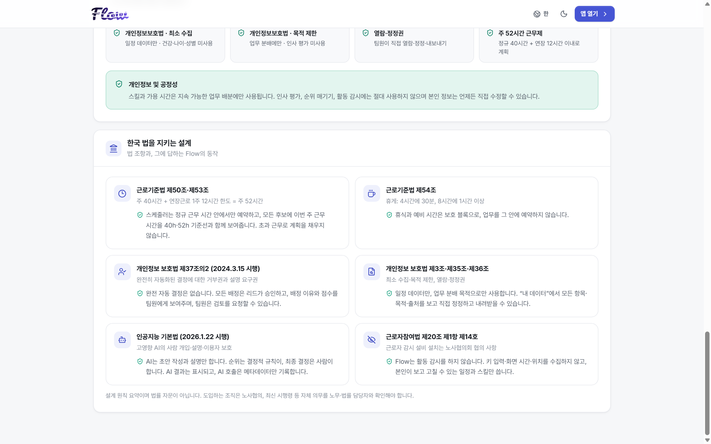
| 항목 | 내용 |
|---|---|
| 웹 (심사용 URL) | https://flow-main-rouge.vercel.app · 로그인 없이 접속, 대시보드의 “4시간 데모 실행”으로 바로 시작 |
| API · 문서 | Hono API를 ngrok 고정 도메인으로 공개, Swagger UI /api/docs, 상태 확인 GET /api/health |
| API 키 | 서버 .env에만 보관(저장소 제외). /api/health가 공급자 · 모델 · 키 설정 여부를 알려줍니다 |
| AI 실패 시 | 규칙 기반 초안 + 재시도 버튼, 비교 · 승인은 그대로 동작. 이 문서의 화면은 모두 AI API가 연결되지 않은 상태(화면 왼쪽 아래 “API 오프라인 · 규칙 파서”)에서 캡처했습니다. |
| 테스트 | 스케줄러 · 추출 · 동기화 단위 테스트 24개 통과, 타입 검사와 빌드 통과 |
npm install cp .env.example .env # GROQ_API_KEY, SUPABASE_URL 등 (선택, 없어도 동작) npm run dev # 웹 http://127.0.0.1:5173 · API :3001 npm test # 단위 테스트
| 한계 | 다음 단계 |
|---|---|
| 외부 도구 연동은 명세와 정적 응답 단계 | Google Calendar 읽기 연동 → Jira · GitHub 연동 순으로 구현 |
| 예상 시간 보정은 합성 완료 업무 18건 기준 | 완료 이슈와 실제 캘린더 사용 시간으로 표본 자동 축적 |
| 로그인 · 권한 구분 없음(리드/팀원 보기 전환) | 리드 · 팀원 계정과 권한별 화면 |
| 백엔드가 개발자 PC + ngrok에서 실행 | Render · Fly.io 등 상시 호스팅으로 이전 |
| 실제 팀 리드 인터뷰 미실시 | 소규모 IT 팀 3곳 이상 인터뷰 후 가중치와 화면 검증 |
| 메신저 밖에서 요청을 붙여넣어야 함 | Slack · 카카오워크 · 네이버웍스에서 요청 · 승인 |
법 조항 설명은 설계 원칙 요약이며 법률 자문이 아닙니다. 실제 도입 시 노사협의와 최신 시행령을 노무 · 법률 담당자와 확인해야 합니다. 앱의 인물과 수치는 제공된 직원 명단 CSV를 바탕으로 만든 합성 데모 데이터입니다.